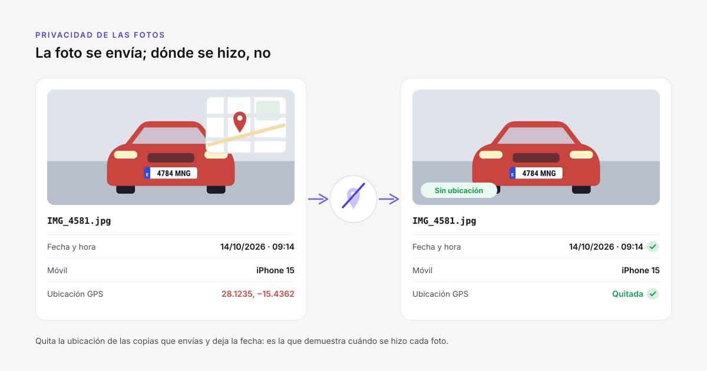

Cómo quitar la ubicación GPS de las fotos antes de enviarlas
Publicado el · actualizado el · por el equipo de PeritoLab
Casi todas las fotos que haces con el móvil guardan dentro el punto exacto donde se hicieron. No se ve en la imagen, pero viaja con el archivo: en el correo, en la plataforma de la aseguradora y en cualquier sitio donde acabe la foto. En un peritaje eso puede decir dónde vive el asegurado, dónde guarda el vehículo o dónde está el taller. Esta guía explica cómo comprobar si una foto lleva la ubicación, cómo quitarla en Windows, en el iPhone y en Android, y cómo hacerlo de una vez con todo un reportaje.

Qué guarda una foto además de la imagen
Cada foto de un móvil o de una cámara lleva unos datos escondidos, llamados EXIF: la fecha y la hora en que se hizo, el modelo del teléfono, los ajustes de la cámara y, si el móvil tiene la ubicación activada, las coordenadas GPS. Con esas coordenadas cualquiera puede abrir un mapa y ver el portal, la plaza de garaje o la nave donde se tomó la foto, con un margen de pocos metros.
La ubicación precisa de una persona es un dato personal: el Reglamento General de Protección de Datos cita expresamente los «datos de localización» entre los que permiten identificar a alguien. Si el expediente no necesita saber dónde se hizo cada foto, lo prudente es no enviarlo.
Cuándo conviene quitarla y cuándo no
No hay una regla única. Depende de para qué sirvan las fotos:
- Quítala cuando las fotos salen de tu control: las que subes a la plataforma de una aseguradora, las que envías por correo a un taller o a un abogado, las que se adjuntan a un informe que va a leer mucha gente. Las fotos hechas en el domicilio del asegurado o en su garaje son las más delicadas.
- Consérvala en tu archivo cuando la ubicación forme parte de la prueba: un siniestro en la vía pública, un vehículo que se peritó en un lugar concreto o un encargo en el que te piden acreditar dónde estuviste. En esos casos, guarda los originales completos y quita el GPS solo de las copias que envías. Si además tienes que demostrar que esos originales no han cambiado, mira cómo funciona la huella SHA-256 de las fotos.
Lo que no conviene tocar es la fecha y la hora: son las que demuestran cuándo se hizo cada foto. Un buen método quita la ubicación y deja todo lo demás.
Cómo saber si una foto lleva la ubicación
En Windows, haz clic derecho sobre la foto, elige Propiedades y abre la pestaña Detalles. Si la foto guarda dónde se hizo, verás un apartado GPS con la latitud y la longitud. Si no aparece, no la lleva.
En el iPhone, abre la foto en la app Fotos y desliza hacia arriba: si tiene ubicación, aparece un mapa con el sitio. En Android, en Google Fotos, desliza hacia arriba o toca los tres puntos para ver la información: el lugar sale debajo de la fecha.
Cómo quitarla en Windows, sin instalar nada
Windows trae una opción para borrar estos datos. Funciona con las fotos JPG; con las HEIC del iPhone no aparece, así que antes hay que pasarlas a JPG (lo explicamos en la guía de las fotos HEIC del iPhone).
1. Selecciona las fotos en el Explorador (puedes marcar varias a la vez). 2. Clic derecho, Propiedades y pestaña Detalles. 3. Abajo, pulsa Quitar propiedades e información personal. 4. Elige Quitar las siguientes propiedades de este archivo y marca solo los campos del apartado GPS (latitud, longitud y altitud). Así la fecha se queda. 5. Pulsa Aceptar y vuelve a mirar la pestaña Detalles para comprobar que el apartado GPS ya no está.
La otra opción de esa ventana, Crear una copia con todas las propiedades posibles quitadas, deja intacto el original, pero borra también la fecha y el modelo del móvil. Para un peritaje suele ser demasiado.
Tiene dos inconvenientes: al quitar las propiedades del propio archivo cambias el original, y con un reportaje de decenas de fotos repartidas en varias carpetas, ir carpeta por carpeta es lento y es fácil que se escape alguna.
Cómo evitar que el móvil la guarde
Si nunca necesitas la ubicación en tus fotos de trabajo, lo más sencillo es que el móvil no la guarde:
- iPhone: Ajustes, Privacidad y seguridad, Localización, Cámara, y marca Nunca. Si solo quieres quitarla al compartir una foto concreta, en la hoja de compartir toca Opciones, arriba, y desactiva Ubicación.
- Android: abre la app de la cámara, entra en sus ajustes y desactiva la opción de guardar la ubicación (según el fabricante se llama «Etiquetas de ubicación», «Guardar ubicación» o parecido).
Ten en cuenta que esto afecta a todas las fotos desde ese momento, también a las que quizá te interese tener localizadas. Por eso muchos peritos prefieren hacer las fotos con la ubicación y decidir después qué copia sale con ella y cuál sin ella.
Cuidado con los atajos
- Enviar las fotos por WhatsApp para «limpiarlas» no es buena idea: si las mandas como foto, pierden calidad; si las mandas como documento, llegan tal cual, con la ubicación.
- Las webs que quitan los metadatos obligan a subir las fotos del siniestro a un servidor que no conoces. Es justo lo que querías evitar.
- Hacer una captura de pantalla de la foto quita la ubicación, pero también la fecha, la resolución y cualquier valor de la foto como prueba.
Quitar la ubicación de todo el reportaje de una vez
Si envías fotos cada día, lo práctico es una herramienta que lo haga por lotes y sin tocar los originales. PeritoLab Compresor es gratis para Windows: arrastras la carpeta del siniestro y, con la opción Quitar la ubicación GPS marcada, todas las fotos salen sin coordenadas y con la fecha y la hora de siempre. De paso puedes fijar un peso máximo por foto para la plataforma de la aseguradora y pasar las HEIC del iPhone a JPG (lo explicamos en la guía para reducir el peso de las fotos para la aseguradora). Las fotos nuevas se guardan en una carpeta aparte, con la misma estructura; los originales se quedan como estaban. Todo se hace en tu ordenador: ninguna foto se sube a internet.
Si no quieres que las fotos pierdan peso, PeritoLab Conversor, también gratis, quita el GPS conservando cada foto a la máxima calidad.
En resumen
- La mayoría de las fotos del móvil llevan dentro dónde se hicieron, y eso viaja con el archivo.
- Comprueba si la llevan en Propiedades, Detalles, en Windows, o deslizando hacia arriba en el móvil.
- Quita la ubicación de las copias que envías y conserva los originales completos en tu archivo.
- No borres la fecha: es lo que demuestra cuándo se hizo cada foto.
Para el resto del expediente, tienes también qué fotos hacer en un peritaje de automóvil y cómo montar el reportaje fotográfico del informe pericial.
Sigue leyendo
 Cómo reducir el tamaño de las fotos para enviarlas a la aseguradoraCómo reducir el tamaño de las fotos de un siniestro para la aseguradora o la plataforma de peritación sin perder detalle, y por qué quitar el GPS.
Cómo reducir el tamaño de las fotos para enviarlas a la aseguradoraCómo reducir el tamaño de las fotos de un siniestro para la aseguradora o la plataforma de peritación sin perder detalle, y por qué quitar el GPS. Cadena de custodia de las fotos del peritaje: la huella SHA-256Qué es la huella SHA-256 de una foto, qué demuestra y qué no, cómo calcularla en Windows sin instalar nada y cómo incluirla en el informe pericial.
Cadena de custodia de las fotos del peritaje: la huella SHA-256Qué es la huella SHA-256 de una foto, qué demuestra y qué no, cómo calcularla en Windows sin instalar nada y cómo incluirla en el informe pericial.- Cómo juntar varias fotos en un PDF en Windows, sin subirlas a ninguna webCómo juntar varias fotos en un PDF, una por página, en Windows y sin subirlas a ninguna web: Microsoft Print to PDF paso a paso y con muchas carpetas.